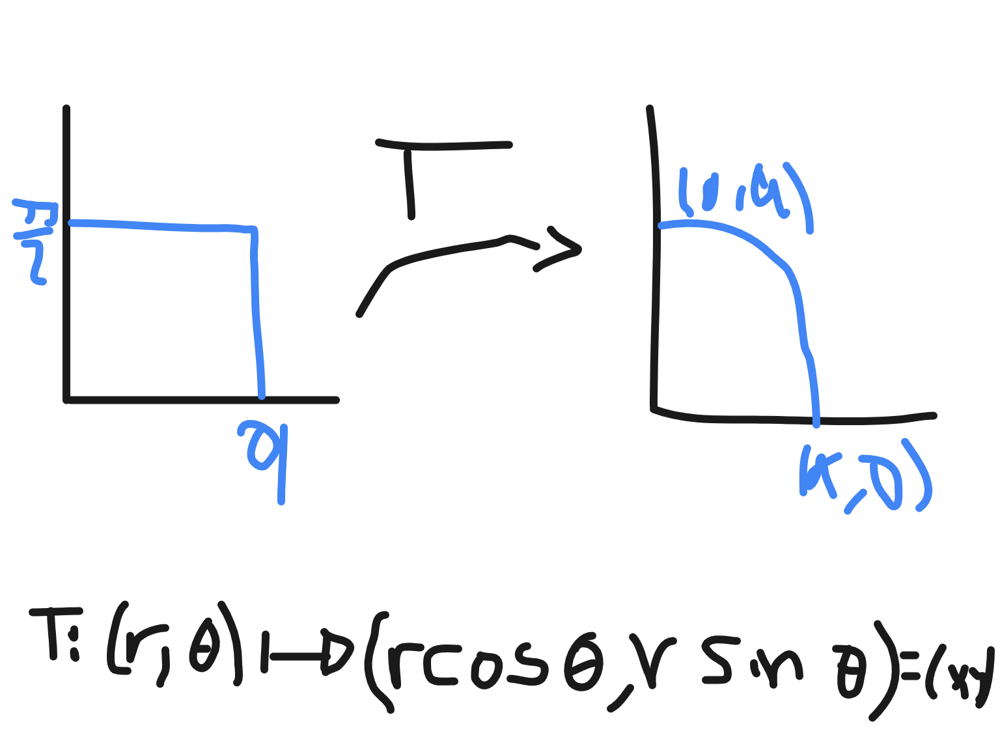

What are multivariable functions?
Multiple-number inputs. Multiple-number inputs. Vector-valued functions f:X⊂Rn→Y⊆Rm.
Example: f:(x,y,z)→(xyz,sin(x))
Single-number output. Single-number input. One variable f:X⊂R→Y⊆R.
Example: f(x)=x
Scalar-valued functions f:X⊂Rn→Y⊆R.
Example: f:(x,y,z)→xyz+sin(xyz)
Single-number input. Multiple-number output. f:X⊂R→Y⊆Rn
Example: f:(t)→(t2,t+1)
Domain and Range of a Function
Graph function
Definition.
graphf={(x1,...,xn,f(x1,...xn))∈Rn+1∣(x1,...xn)∈U)
The Method of Level curves
The Method of Section
Contour Map
Inline functions
Parametric functions
Parametric functions, two parameters
Transformations
Worked examples
Limits
Boundary
x+x0∈Rn,x−x0∈A
Open sets
Assume r=min(∣∣b−x∣∣,∣∣x−b∣∣) and x0∈Dr(x)If r>∣∣b−x0∣∣>0and r>∣∣x0−b∣∣>0Then Dr(x)⊂A Worked examples
- A={(x,y)∈R2∣x2+y2<1}
- (x0,y0)∈A={(x,y)∈R2∣y>x2},(b,b2)∈B={(x,y)∈R2∣y=x2}
r=min∣∣(x0,y0)−(b,b2)∣∣r2=min{(x0−b)2+(y0−b2)2}min={solution to dbd((x0−b)2+(y0−b2)2)=0}min={solution to 2(x0−b)+2b(y0−b2)=0,b>0} w=(x0,y0)−(b,b2),r=∣∣w∣∣=(x0−b)2+(y0−b2)
TODO: Image to latex
https://www.geogebra.org/calculator/bycqw5nm
https://www.wolframalpha.com/input/?i=2(1-b)%2B4b(3-b^2)%3D0%2C+solution+for+b
Limits
Worked examples
- Let f:Rn→R and suppose that lim(x,y)→(1,3)f(x,y)=5. Analyze it.
f(x,y) approaches 5 as (x,y) approaches (1,3), then his neighborhood exists. But We can't say f(1,3) exists by we've not known f is continuous.
2. Let f:Rn→R is continuous and suppose that lim(x,y)→(1,3)f(x,y)=5. Analyze it.
f(x,y) approaches 5 as (x,y) approaches (1,3), then his neighborhood exists. We can say f(1,3) exists by we've known f is continuous.
3. lim(x,y)→(0,1)x3y=(limx→(0,1)x3)(limy→(0,1)y)=(0)3(1)=0
4. limx→0x2cos(x)−1=limx→0x2−2sin2(2x)=limx→0−42(x/2sin(2x))2=−21
5. limh→0heh−1=limh→0h((1+h)1/h)h−1=limh→0h1+h−1=1=dxdex0
limx→0+x1=∞=limx→∞ylimx→∞x1=0=limy→0ylimx→∞(x1)x=0=limy→0+yy1limx→∞(1+x1)x=e=limy→0+(1+y)y1limx→x0limx→x0limx→x0...limx→x0f(x)=L,limx→x0=L 6. lim(x,y)→(0,1)exy=(lim(x,y)→(0,1)ex)(lim(x,y)→(0,1)y)=(1)(1)=1
7. limx→0xsinn(x)=limx→0xsin(x)limx→0sinn(x)=(1)(0)=0,n>0
8. limx→0xnsinn(x)=(limx→0xsin(x))n=1n=1,n>0
9. limx→ap(x)=p(a),p(x)=∑knaxk
10. lim(x,y)→(0,0)sen(x)ln(1+y)exy−1=lim(x,y)→(0,0)(x−x3/3!+x5/5!+O(∣x∣7))(y−y2/2+y3/3!+O(∣y∣4)1+xy+(xy)2/2!+(xy)3/3!+O(∣xy∣4)−1=1
Gradient
direction and rate of fastest increase.
3. z−x=0 and y−3x3+z2=0
https://www.geogebra.org/3d/bzcm27ut
https://www.geogebra.org/calculator/nvbvdvc4
High-Order Derivatives: Maxima and Minima
Iterated Partial Derivatives
Let f:Rn→R be of class Cn if ∂xn∂fn,∂yn∂fn,∂xn∂fn,... exists and are continous. How second-order derivatives are written:
∂x2∂2f=∂x∂(∂x∂f) Iterated partial derivatives∂x∂y∂2f=∂x∂(∂y∂f) Mixed partial derivatives 💡
The mixed partials are equal by
Young's Theorem by recent contribuitor.
Euler → Alexis Claude Clairaut →H. A. Schwarz→W. H. Young
Young's theorem on equality of mixed partials
If f(x,y) is of class C2, then the mixed partial derivativates are equal; that is,
∂x∂y∂2f=∂y∂x∂2f proof. Key ideas Schwarz's theorem.
Taylor series
Big O
http://web.mit.edu/16.070/www/lecture/big_o.pdf
http://faculty.bard.edu/belk/math142af09/ApplicationsTaylorSeries.pdf
http://www.math.ubc.ca/~feldman/m120/taylorLimits.pdf
Polar functions
XTX′=0X′=kn^,fn(t)=k=0,∣∣n^∣∣=1You need to find t=fn∗(k). Consider the polar curve r=f(θ)Therefore the equation of our tangent line is:y−f(θ)sin(θ)=dxdyθ(x−f(θ)cos(θ)) Worked examples
- r=1−sin(θ), At which values of θ does the graph of r have a horizontal tangent line?
XTX′=[(1−sin(θ))cos(θ)(1−sin(θ))sin(θ)][(sin(θ)−1)sin(θ)−cos2(θ)(1−2sin(θ))cos(θ)]=0 Horizontal tangent line: X′=ki^f0′(θ)=−sin(θ)−cos(2θ)=0f1′(θ)=(1−2sin(θ))cos(θ)=0θ=... 2. r=4sin(3θ), What is the slope of the tangent line to the curve r when θ=3π?
dxdy=12cos(a)cos(3a)−4sin(a)sin(3a)4(3cos(3a)sin(a)+cos(a)sin(3a))dxdypi/3=3
Double integral
Worked examples
∫0a∫0a2−x2(a2−y2)dydx∫0a∫0a2−y2(a2−y2)dxdy=∫0a(a2−y2)23=163πa4 Polar coordinates
∣∂(r,θ)∂(x,y)∣=r
x=rcosθ, y=rsinθ
Substitute
∫0π/2∫0ar(a2−r2sin2θ)drdθ=163πa4
{kind=link}